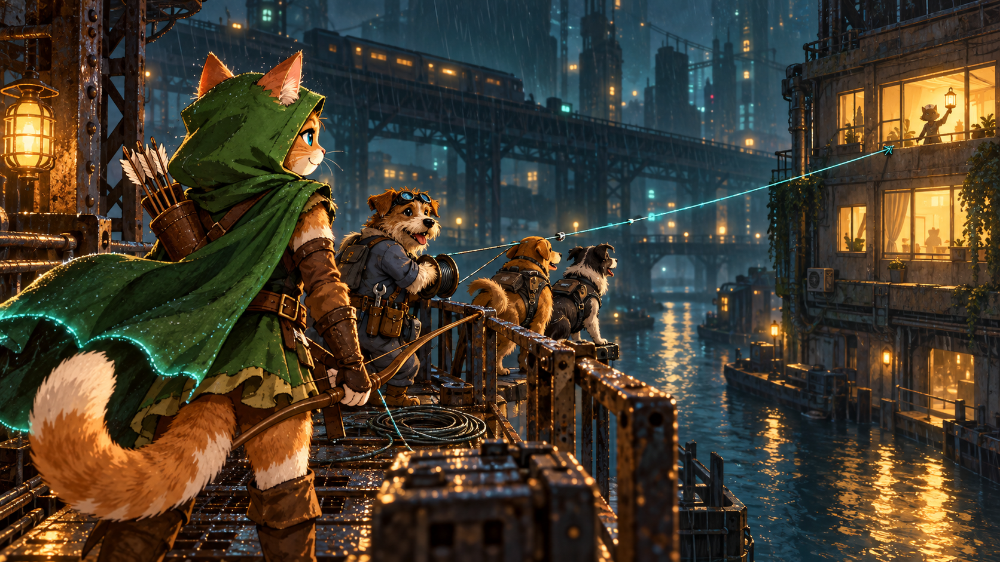

Fiction / Robin’s world
Robin: Dead Grid
The city gave points for everything except fixing it.

Under neon towers, delivery dogs chased green arrows for streaks and badges. The arrows led in circles. Across the canal, a clinic had been dark for three nights.
“Lovely dashboard,” Robin said. “Shame about the lights.”
The cat climbed an abandoned rail gantry with her bow. For six evenings, she practiced sending a thread between two broken pylons. Arrows drowned. Her paws blistered. She learned to loosen her grip and wait out the passing trains.
A terrier mechanic found a working circuit. Two couriers brought cable instead of chasing another bonus.
On the seventh evening, Robin’s arrow crossed the water. The couriers hauled the cable along her thread; the mechanic made the connection.
The clinic lit up.
Their screens offered nothing. From the opposite window, a nurse flashed a lamp twice.
Robin raised two fingers, then passed the bow to the terrier.
Version 2.0 · 19 September 2026 · Current decisions and verified scope
Galaxy King Dog is Robin's arcade: a cat archer, cyberpunk alien hounds and a city worth fighting for. The free game comes first. The separate Web3 editions explore verifiable runs, a shared game pool, achievement rewards and charity funding. Robinhood is the mainnet development priority. Mainnet migration has not happened.
This paper replaces conflicting current-policy descriptions in the historical Solana v1.8 paper. It distinguishes approved design, deployed test contracts and remaining production work. Test-network tokens, NFTs and ETH are experimental; they are not mainnet assets or a promise of earnings.
1. Play and current status
| Edition | What it is | Status at this review |
|---|---|---|
| Free PC and mobile arcade | Keyboard or touch play; no wallet or entry fee | Browser editions available through the current website. Mobile includes a circular joystick, red FIRE button and expanded view. |
| Game Jolt | Separately packaged free arcade | Use its game page for the available build. This review does not certify online score submission on every hosted version. |
| Robinhood Testnet | EVM wallet, test ETH entry, recorded runs, test rewards and milestone NFTs | V3 deployed on chain 46630; current gateway and health endpoint respond. Full wallet-connected gameplay was not repeated during this documentation review. |
| Solana Devnet | Separate historical Solana program and browser preview | Program deployed; earlier validation recorded runs and a 1-token reward mint. This is Devnet evidence, not current production readiness. |
| Mainnet | Proposed RH-first economy | Disabled. Production inputs, independent review and operational launch checks remain incomplete. |
Choose PC or mobile · RH Testnet · Solana Devnet · Web3 mode chooser · Game Jolt · Project updates on X · Telegram community
Relative game links in the downloadable paper resolve from its hosted location. At this review the working Web3 demo uses a temporary tunnel. It depends on its host computer and running services; stable public hosting still needs restoration. An older mirror may show older documentation. Treat the date and contract identity in this paper as part of every deployment claim.
2. Robin, the story and gameplay
Robin's Dead Grid prologue is a fictional story about skill becoming useful to others. The invasion continues through wave-linked story beats and objectives: alien hounds follow a command signal; Robin learns to break the leash. Her English voice, cat-versus-dog humour, movement and weapon effects carry that personality inside the arcade.
A boss encounter supplies a random weapon gift at the start of the fight. This is a gameplay pickup, not a token payment or NFT. The selectable Robin Moon and Robin Sailor Smoon are two distinct skins. Costumes and voice do not grant financial rewards or substitute for a verified run.
3. RH Testnet evidence and score verification
The current RH V3 game is 0xC9023FD8cd6364920CF890dF180883217Ff4944E. Its deployment transaction is on Robinhood Testnet, chain 46630.
Read-only checks at block 121693161, on 19 September 2026, found:
- Charity policy version 2; configuration sealed; season 1 active; game unpaused.
- 3 whole test $420POP in total supply, with 9 decimals.
- First-player and first-record milestone NFTs already issued.
- A bound buyback executor. Its token, route, price guard and governor are test fixtures, not a reviewed production market or DAO.
- Contract balance and accounted liabilities both 0.0021087 test ETH. This is a point-in-time accounting observation, not a security audit.
The active verifier reports testnet_event_ledger validation, authenticated run
starts and a persistent ledger. It validates submitted events and signs accepted
claims. The RH contract checks an EIP-712 verifier signature bound to the run,
player, paid entry and deployment.
The active service does not independently replay all game physics. Its
authoritative_gameplay, independent_physics_replay, real_value_rewards and
mainnet_ready flags are false. A separate fixed-timestep, server-seeded replay
candidate has passed local regressions, including an HTTP-to-contract fixture
flow. That is not proof it is enabled on the public service or certified for
production. Replay also does not establish that a human, rather than a bot,
supplied valid inputs. The score signer remains a trust and availability dependency.
The earlier Solana Devnet mint is historical evidence for 1 test token. It is separate from the RH token supply.
4. Paid entries, fees and refunds
The free arcade has no paid entry. RH Web3 entries use the chain's native ETH, with gas paid separately. The current Testnet normal fee is 0.00027 test ETH; its configured final-human-token entry fee is 0.0027 test ETH and its entry timeout is two hours. These are Testnet settings, not approved mainnet pricing.
An entry deposit begins in escrow. The first successful start moves it into the game economy. A retry must reuse the same entry rather than charge again. An unused entry can be refunded after expiry; a started or lost game is not automatically refundable. Refund and recovery boundaries must be clear before launch. An unavailable verifier or missing restored ledger state must not be presented as a reason to pay again.
The historical $0.10 target and weekly SOL/USD oracle update belong to the Solana design. RH V3 uses configured native-wei fees and has no ETH/USD price oracle. Its fees lock at configuration seal. Mainnet needs an explicit reviewed pricing policy; a dollar peg cannot be promised by this implementation.
5. Game pool and the proportional 5% buyback
At the first successful start of a paid entry:
- 5%, rounded down in native wei, is reserved once for buyback.
- The remaining 95% enters the game pool and follows the existing payout ratios. This reduces every original share proportionally, including the creator's.
- Unused refunded entries do not fund buyback. Retries and later checkpoints do not deduct another 5%.
The game pool is contract accounting, not a DEX liquidity pool. Pending entry escrow, game balances, buyback funds, reserved payouts, personal credits and charity allocations are accounted for separately.
| Checkpoint | Split of the eligible game-pool balance before the creator sub-split |
|---|---|
| Ordinary season end, seasons 1–31 | 70% retained; 20% champion; 10% creator-and-charity allocation |
| Every new world record | 70% retained; 20% original record breaker; 10% creator-and-charity allocation |
| Human season end, season 32 | 30% carried to Chaos; 40% human champion; 30% creator-and-charity allocation |
| Chaos season end, season 33 | 67% Chaos champion; 33% creator-and-charity allocation |
Each creator-and-charity allocation is split 49% to the creator and 51% to charity. Of that charity portion, 20% recycles into the game pool and 80% is reserved for charity. Integer rounding follows the contract; recycled amounts increase retained funds beyond the headline checkpoint percentages.
For illustration, from 100 units of eligible pool at an ordinary checkpoint: 20 goes to the champion, 4.9 to the creator, 4.08 to charity and 71.02 remains in the game pool. This describes a pool checkpoint, not an immediate split of each 100-unit deposit.
Checkpoint liabilities preserve the original winner and cannot be redirected to a later record holder. Claims settle the recorded allocation once. The recycled balance remaining after final Chaos is still backed in the game pool. Its final disposition remains a launch decision; there is no automatic season 34 or admin sweep that resolves it.
6. Buyback tokens and the community treasury
The buyback target is a meme token still to be selected. It is distinct from the game's $420POP reward token unless a later explicit decision changes that. Purchased tokens go to a separate treasury for that meme coin's community. They are held for releases approved through community voting. They are not burned and do not go to the creator wallet.
The executor design limits trade size, daily budget, cooldown, quote age, deadline and minimum tokens actually received by the treasury. Failed swaps revert the allocation. Route recovery uses the treasury's governance and a review delay; it does not add a creator withdrawal shortcut.
A contract named “governance” is not by itself proof of meaningful community control. The real token, treasury, voting rules, governor powers, swap liquidity, adapter and price guard must be selected and tested together. Transfer taxes, rebasing or token blacklists can break assumptions. The current Testnet fixtures prove neither market purchases nor production community governance.
The gameplay pause does not automatically pause buyback execution. No single universal emergency switch is claimed.
7. $420POP supply, seasons and migration
The approved direction is RH first, fresh mainnet seasons, one project supply cap of 2,100,300,000 $420POP, with 9 decimals. Human seasons 1–32 total 2,100,000,000 tokens; Chaos season 33 adds at most 300,000. The fixed season-cap schedule approximately halves human issuance while preserving the exact total.
The game contract is the RH token's sole minter. Qualified, recorded runs may claim rewards once, bounded by each season's remaining cap. The current Testnet configuration uses 1 token per qualifying run; this must not be mistaken for approved final mainnet reward pacing. In particular, very large early caps at that rate make season completion impractical for a short demonstration.
Mode B checks the score threshold at reward mint time: the base target holds through 80% of a season's mint cap, rises to 1.15 times base at 95%, then to 1.35 times base at the cap, rounded up. A previously qualifying score can become insufficient before its reward is claimed. The last human token requires a world-record run and the corresponding premium entry.
Mainnet Solana emission stays disabled until a reviewed cross-chain mechanism preserves the same project cap. There is no approved second independent full supply, automatic bridge or duplicate reward entitlement. Historical Testnet and Devnet runs, tokens and NFTs remain test evidence, with no automatic conversion to mainnet balances. No mainnet token address is announced by this paper.
8. Charity: holder advice, administrator decision
The approved initial RH policy retains the sole project administrator. Holders advise through a 99-day ballot at the Human and Chaos charity gates. Voting uses snapshot balances, requires at least one whole token previously farmed at the snapshot, and counts whole held tokens as weight. Transfers after the snapshot cannot reuse that ballot's weight.
After finalization, the administrator considers the vote and selects the recipient with a public reason. The old 10,000-weight quorum and tie result are recorded as information; they do not bind the decision or force another ballot. An empty charity gate completes sequencing without inventing a payment.
The ballot candidate list locks at configuration seal. The administrator can select a recipient outside that list after the ballot. The contract rejects certain destinations, including the creator address, but it cannot prove that another address is a genuine charity or is independent of the administrator. Recipient identity therefore requires public, off-chain verification.
Saving a decision authorizes payment immediately; it is not a private draft. Anyone may settle the exact allocation to the approved recipient with its matching reason hash. The administrator may revise an unpaid decision, but the payment can confirm first. A changed recipient or reason makes a stale settlement revert. A failed recipient transfer leaves the allocation reserved. A successful transfer to an incorrect payable address cannot be recalled.
There is no required “admin + 10 holders” committee, additional mandatory timelock or automatic DAO transition in this phase. The administrator's role does not transfer to the meme community treasury: charity decisions and buyback-treasury voting are different systems.
9. NFTs and cosmetic skins
RH V3 uses ERC-721 milestone NFTs. Solana's historical design uses Metaplex and program-derived accounts; those descriptions are not interchangeable.
| Milestone | Award identity |
|---|---|
| First player | Once for the deployment's first recorded player |
| Season champion | One per ordinary season, 1–31 |
| Record breaker | One per new world-record number, awarded to its original breaker |
| Human champion | Season 32 |
| Chaos champion | Season 33 |
Anyone may relay a valid claim, but the contract determines the eligible recipient. The same milestone cannot be issued twice. Later transfer of the NFT does not rewrite its original awarded-to history.
Testnet first-player and first-record awards exist, and all five configured metadata endpoints responded during this review. Their URIs are constructor-fixed HTTPS addresses, which does not make the hosted content immutable. Reviewed durable metadata/image publication remains a mainnet gate.
Free selectable Robin costumes are cosmetic game assets. They are not automatically NFTs, paid collectibles or token-holder benefits. No market price, liquidity, resale value or financial return is promised for a milestone.
10. Administrator powers and security boundaries
Before launch, configuration sealing freezes season policies, fees and ballot candidates; the buyback executor is bound once. Subsequent season activation is permissionless under the existing completion guards. The administrator still controls pause/resume, verifier replacement and unpaid charity decisions.
Ownership renunciation is blocked. A deliberate two-step ownership handoff is supported. The project does not claim that administrator keys were burned or that the system is ownerless. There is no general administrator pool-withdrawal function in this V3, but discretionary charity allocation is still a substantial trust boundary. A compromised or lost administrator key can cause harm or leave operations and allocations stuck.
Private signing keys belong only on protected services or owner-controlled wallets. Making a repository private does not hide JavaScript delivered to a browser. Public game bundles must exclude secrets and server-only code, and an already exposed key must be rotated rather than merely removed from a new build.
Local contract, ledger and replay regressions are useful evidence, not an independent security audit. Recovering a stale ledger backup requires reconciling later chain activity. Current test service availability is not an uptime, loss-prevention or mainnet-safety guarantee.
11. What remains before mainnet
The two deferred choices requested from the creator are the creator's public wallet address and the target meme token with its network and contract address. No private key or recovery phrase should be supplied. Pool balances, the token minter and NFTs do not require personal “pool wallets”.
These two inputs are not the only engineering launch gates:
- Verify administrator custody and recovery, service signing roles, independently confirmed charity recipients, and the actual community treasury/governor.
- Finalize native entry pricing, timeouts, all 33 reward amounts and remaining targets, and the final Chaos retained-balance policy.
- Select and review real swap liquidity, adapter, price guard and expenditure limits; test the complete purchase-to-community-release path.
- Enable and independently review the authoritative gameplay/replay candidate on the intended host, with production RPC/TLS, real Android wallets, sustained play, outages and ledger restore drills.
- Review contracts and final deployment artifacts independently; publish and retrieve durable NFT metadata; verify the exact identities and sealed inputs.
- Approve migration separately. Preserve test history and begin with the approved fresh mainnet state. Preparation and documentation do not execute migration.
12. Historical material and decision precedence
This v2.0 paper is the current policy summary. The original Solana v1.8 paper and its implementation constants remain available as historical reference. They do not override the RH decisions above.
Specifically superseded for RH are automatic binding charity winners, a mandatory holder committee or admin multisig, permanent administrator removal, buyback burns, creator receipt of bought meme tokens, and presenting Solana's USD fee peg as an RH feature. The fixed pool proportions and milestone categories were retained; the 5% buyback deduction and the later governance decisions refine their use.
Historical pool notes · Historical charity notes · Historical NFT notes · Historical security notes
The project is independent; naming a blockchain or platform does not imply its endorsement. Robin's prologue and promotional illustrations are fiction/artwork, not evidence of returns, partnerships or gameplay captures.
The current technical source and downloadable paper are generated together. Earlier Solana material is preserved as an archive, not current RH policy.